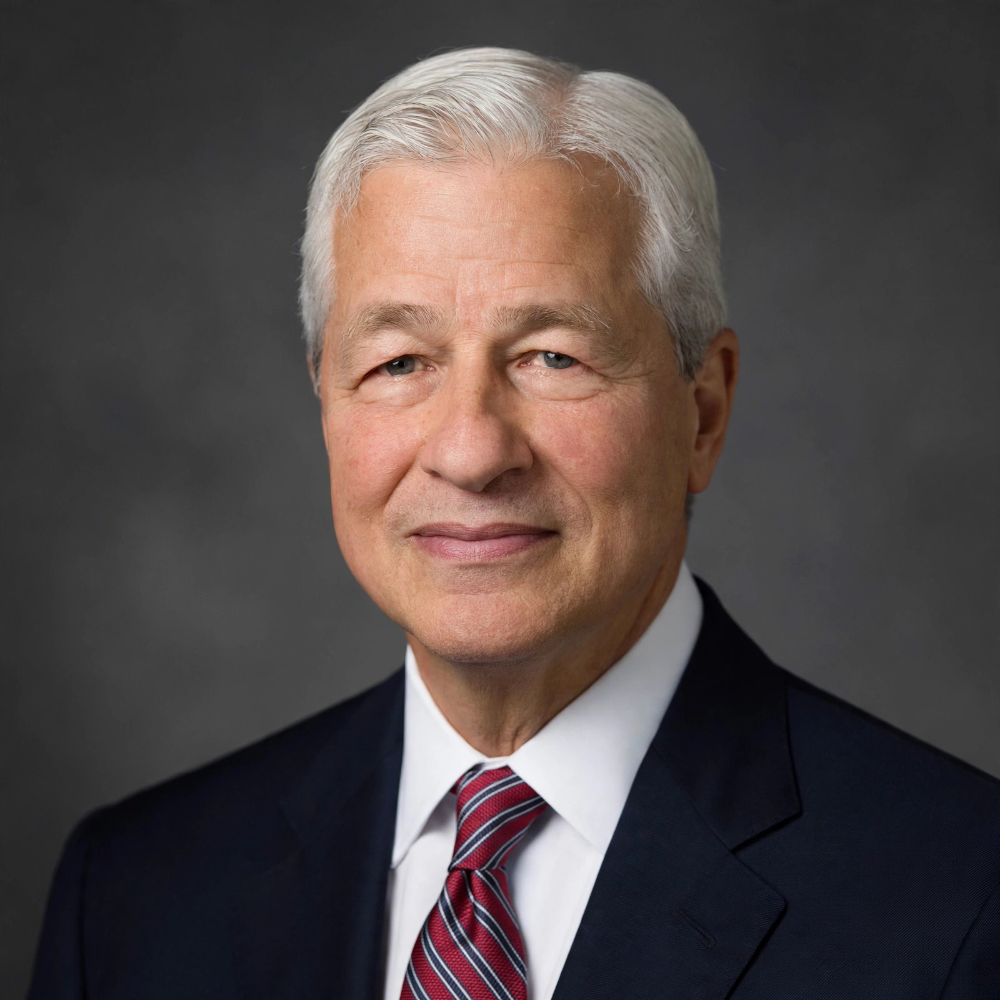

James Dimon (born March 13, 1956) is an American banker and businessman who has been chief executive officer of JPMorgan Chase since 2006, and chairman since 2007. He is considered one of the most influential figures in global finance. Dimon began his career as a management consultant at McKinsey & Company, and later worked with mentor Sandy Weill at American Express, Primerica and Citigroup, from which he was dismissed in 1998.

Dimon became CEO of Bank One in 2000, revived it, and merged it with JPMorgan Chase in 2004. As JPMorgan chief he built a 'fortress balance sheet', steering the bank through the 2008 financial crisis relatively strongly while acquiring Bear Stearns and Washington Mutual's banking operations. The bank later weathered the 2012 'London Whale' trading loss, for which Dimon accepted responsibility.
Dimon's annual shareholder letters are widely read for views on markets, regulation and geopolitics. He has repeatedly discussed succession and retirement without setting a date, and is frequently mentioned in political speculation, which he has generally discouraged. He follows in a Wall Street lineage going back to J. P. Morgan.